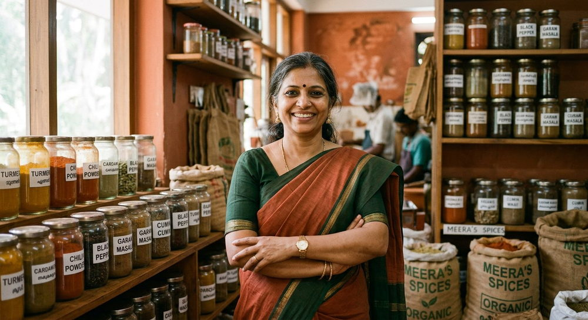

We started with six women, one grinding stone and a problem nobody wanted to solve.
In 2019 one woman, six neighbours and a rented kitchen shed in Doddaballapur. Today 128 women, 480 farmer families and 216 children in school. Nothing about it was quick, and most of it was learned the hard way.
Women employed
processing, QC, packaging, field & office
Farmer partners
across 6 districts & 34 villages
Children supported
school fees, books and Class 10 coaching
Skill training
food safety, machine handling, quality, accounts
Three quiet problems in one supply chain
Lakshmi Devi spent eleven years as a field officer for a commodity trading company in northern Karnataka. She watched the same three things break, season after season.
- The farmer carried all the risk. Rate decided after weighing, payment delayed by weeks, no penalty when the trader defaulted — but a deduction every time the market dipped.
- Women did the work without the wage. Post-harvest cleaning, grading, drying and packing are done almost entirely by women, in their homes, unpaid and invisible in the price chain.
- The last mile was where quality died. Produce that left a village clean arrived at a factory mixed, damp and full of stones. Everyone blamed everyone else and the consumer paid for the filler.

Buy well, make well, and share the upside
Our mission is one sentence long: every woman on our team should be able to pay for her child's education out of the work she does, without asking anyone for help. Everything else — the sourcing rules, the factory, the products — exists to make that sentence true and keep it true.
Sourcing rules we do not bend
Rate agreed before sowing, bought at the farm gate, weighed in front of the farmer, paid within 7 working days, and the whole lot taken — not just the best bags.
Work designed for women
No night shifts, 12 pick-up routes, a creche room, all supervisors promoted from within, and a wage band published on the internal notice before every vacancy.
A permanent education fund
6% of every sale goes into the Class 10 Fund — a payment obligation in our articles of association, ranked like a farmer's invoice. 216 children today.

“I did not want to build a brand. I wanted to fix a price.”
In 2018 I sat on a plastic chair in a farmer's front yard in Byadagi and watched him sell 900 kilos of chilli for ₹82 a kilo. Two hours later, the same chilli was being resold in a yard across the road at ₹121. He knew. He had always known. He simply had no other buyer with a truck.
That is the whole business case. Everything ApnaPan does — the grinding stones, the glass jars, the women on the packing line, the six percent — is downstream of one decision: buy from the person who grew it, at a price agreed before they sow, and keep that promise even when it costs us.
What I did not expect was what the women's side of this would do to me. Shivamma, who runs our roasting line, learned to sign her name in 2022 so she could open a bank account for her daughter's fees. She now checks every batch by smell and has sent two batches back this year. Her daughter is in Class 11. I have signed off on a lot of spreadsheets in my life. That one still gets me.
We are not a large company and we have no ambition to become one at any cost. We want five factories, each one standing next to the crops it processes, each one staffed mostly by women from the villages around it, and each one funded by the sales of the one before. If we do that properly, the rest follows.
Lakshmi Devi R.
Founder, ApnaPan Foods · Doddaballapur, Karnataka
How we grew
Six women and a rented kitchen
Lakshmi Devi started ApnaPan in a rented kitchen shed in Doddaballapur with six women, two grinding stones and ₹40,000 of her own savings. The first product was one masala, sold to neighbours and a single store in Yelahanka.
The lockdown that set our rules
When the mandis shut, we bought whatever our first 40 farmer families could harvest, at the previous year's rate, and stored it in a rented godown. We sold pickles and mixes directly to homes to survive. Our rule — buy at the farm gate, pay in 7 days — started here.
A licence, a lab, and the first label
FSSAI licensing let us sell in stores. We hired our first quality technician, Nasreen, printed our first proper label and moved to a 900 sq ft unit with a sealed packing room. Twenty-two women on the payroll.
The Education Fund begins
A worker asked for a salary advance for her son's Class 10 exam fees. We paid it, and then decided no parent should ever have to ask. The Class 10 Fund was written into the company's articles: 6% of every sale goes into it, permanently.
Our own unit and our own quality lab
We moved into a 1,800 sq ft unit in the KIADB industrial area with a dedicated QC lab, a pickle kitchen, three packing lines and a creche room. 280 farmer partners, 64 women on the team, and 11 products in the catalogue.
Online, and 480 farmers deep
We started selling directly to homes across India, opened the Yelahanka experience store and crossed 480 farmer partners in six districts. Every product page began carrying the name of the farmer and the woman who made it.
Where we are today
128 women, 480 farmer families, 216 children in the education fund and 96,000 packs shipped last year. Our next unit near Kalaburagi will put us closer to our dal farmers and to a new team of women.
Where we are going
Five units, 1,000 women on the payroll, 2,000 children in the education fund and 2,500 farmer partners — each new factory built around the crops of the district it sits in, and each one funded by the sales of the last.
The growth loop
Each part of this loop pays for the next. This is why we do not chase scale for its own sake — a second factory has to be earned by the first.
Why the loop matters more than the growth chart
A second factory is not a marketing decision for us — it is a financial one. Unit #2 near Kalaburagi opens when unit #1 can fund its equipment out of operating profit and when we have 600 farmer families in the dal belt to supply it. That is slower than a venture-funded plan. It is also why our payments to farmers have never been late.
Numbers we publish and re-check every quarter
These are cumulative figures as of September 2026 and are audited along with our annual accounts. Illustrative sample data shown.
Farmer partners
across 6 districts & 34 villages
Women employed
processing, QC, packaging, field & office
Children supported
school fees, books and Class 10 coaching
Above mandi price
average premium paid to farmers in 2025